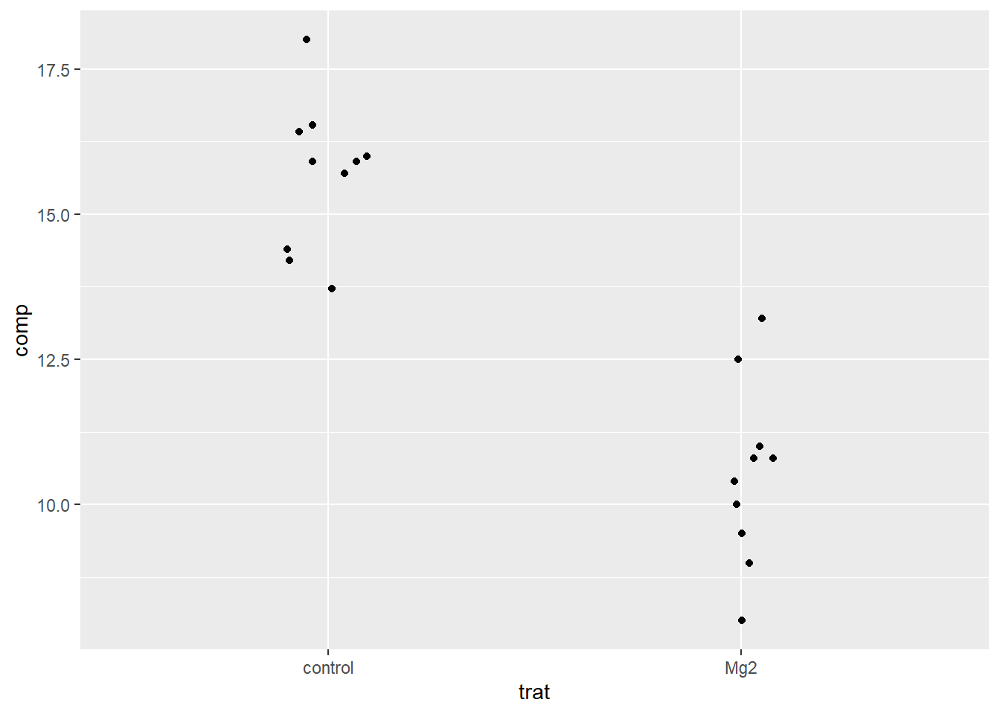
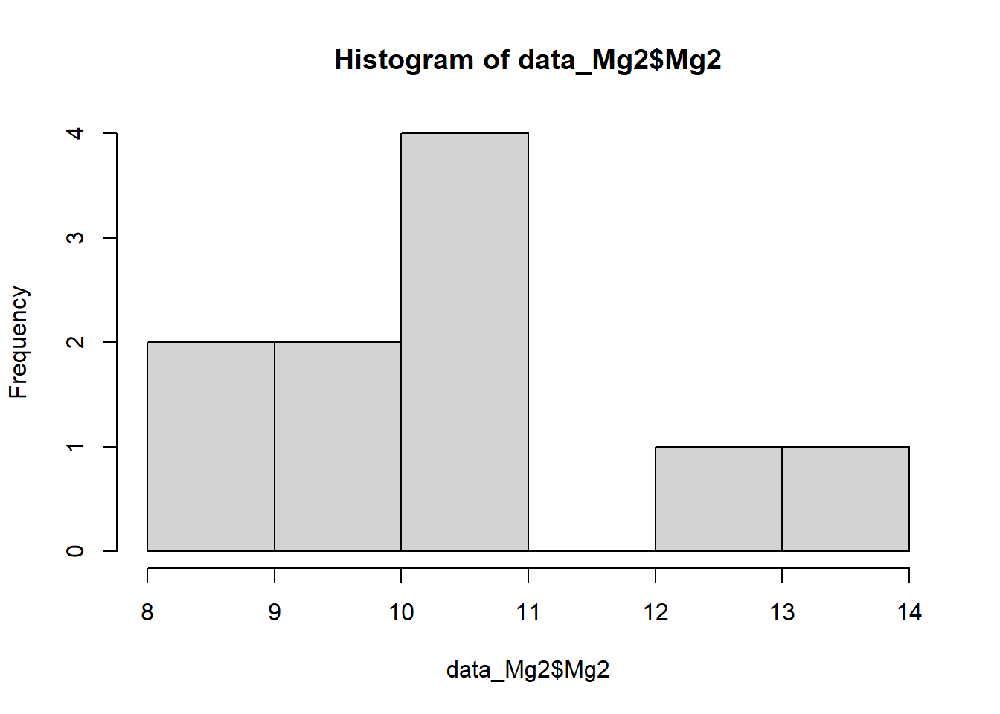
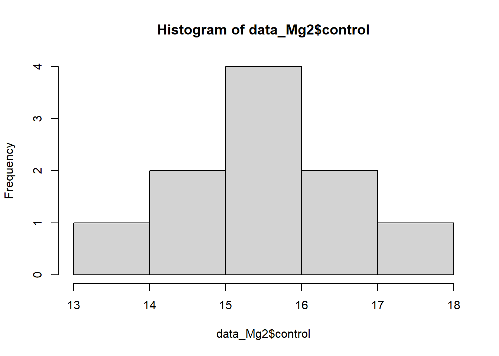
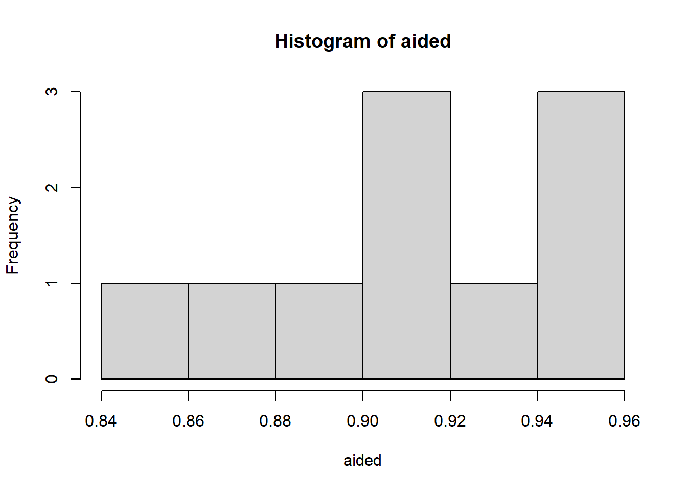
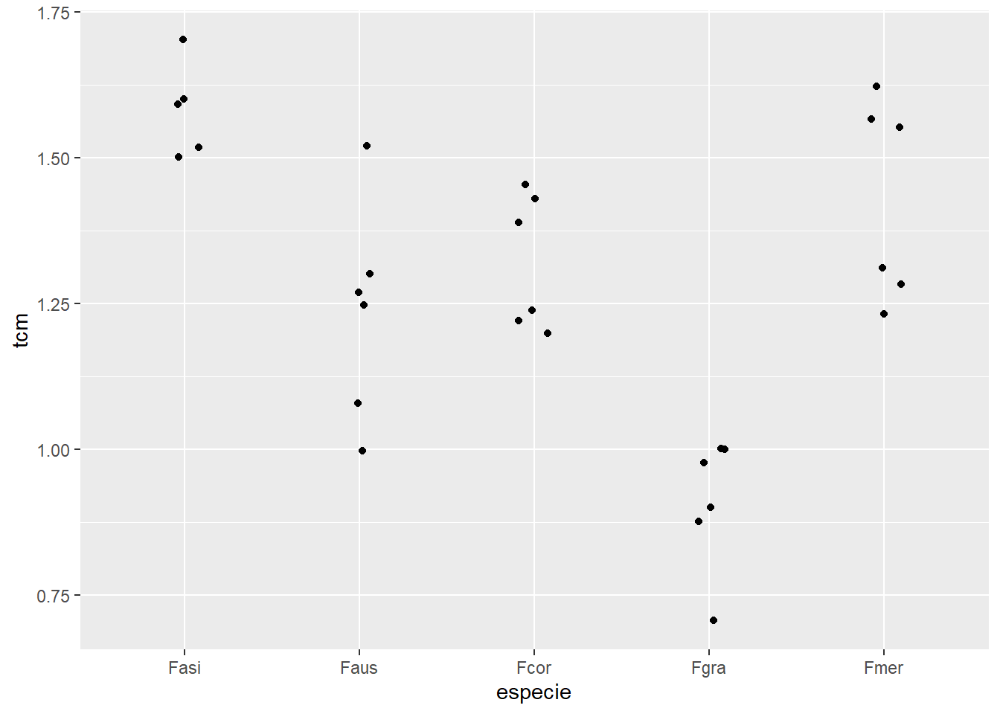
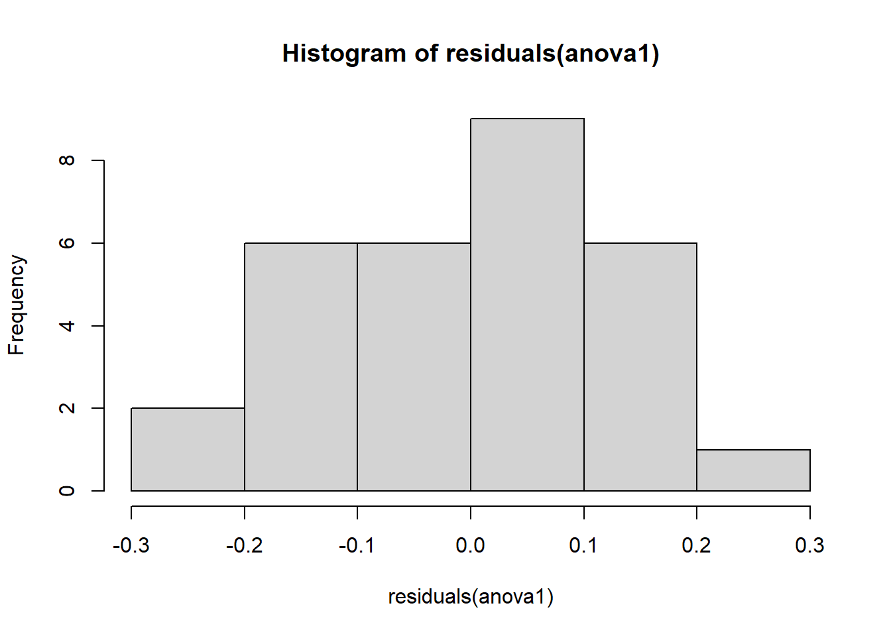
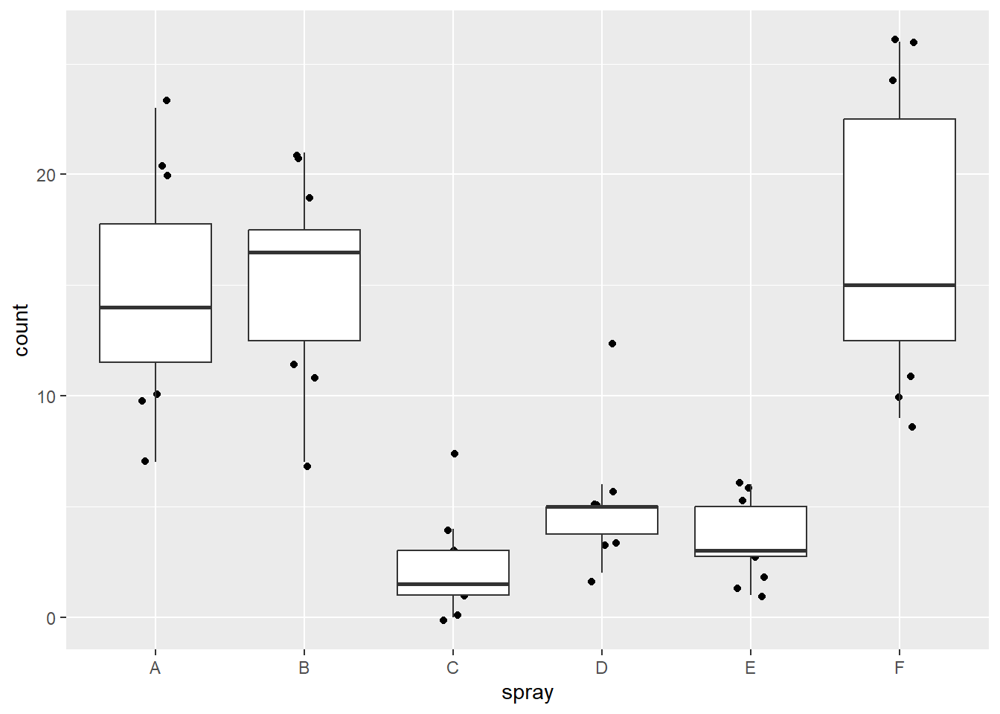

# ───────────────────────────────────────────────────────────────
# Pacotes necessários
library(gsheet) # Importa dados diretamente de planilhas Google Sheets
library(tidyverse) # Conjunto de pacotes para manipulação de dados (dplyr, tidyr, etc.)
library(ggplot2) # Criação de gráficos baseados no Grammar of Graphics
library(ggpubr) # Extensões do ggplot2 com suporte a estatísticas e temas prontos
library(report) # Gera interpretações automáticas e legíveis de testes estatísticos
library(rstatix) # Funções simplificadas para testes estatísticos (t, ANOVA, Levene, etc.)
library(emmeans) # Estima e compara médias ajustadas de modelos (muito útil pós-ANOVA)
library(multcomp) # Permite contrastes múltiplos e testes de comparações múltiplas
library(multcompView) # Gera letras compactas para visualização de grupos estatisticamente distintos
library(car) # Contém o teste de Levene (leveneTest) e outras funções para modelos lineares
library(agricolae) # Para o teste de Kruskal com agrupamento de médiasAula 3 - Testes Estatísticos e Visualizações
Aula 3 – 16/04/2025
Disciplina: FIP606 – Análise e Visualização de Dados em Fitopatologia
Professor: Emerson Del Ponte
✦ Objetivos da aula:
- Aplicar testes estatísticos (t de Student, ANOVA, Kruskal-Wallis, Shapiro-Wilk, Levene)
- Comparar dois grupos com
t.test() - Verificar pressupostos de normalidade e homocedasticidade
- Usar modelos lineares (lm), ANOVA e transformações
- Visualizar resultados com
ggplot2eggpubr - Trabalhar com dados paramétricos e não-paramétricos
- Realizar testes de médias (emmeans, multcomp)
# ───────────────────────────────────────────────────────────────
# Importando dados para comparação entre tratamentos
data_Mg <- gsheet2tbl("https://docs.google.com/spreadsheets/d/1bq2N19DcZdtax2fQW9OHSGMR0X2__Z9T/edit?gid=983033137#gid=983033137")
# Visualização inicial: dispersão dos valores por tratamento
data_Mg |>
ggplot(aes(trat, comp)) +
geom_jitter(width = 0.1)
# ───────────────────────────────────────────────────────────────
# Preparação dos dados para teste t de Student (dois grupos)
# Transforma o data frame para formato wide: colunas separadas para cada grupo
data_Mg2 <- data_Mg |>
pivot_wider(names_from = trat, values_from = comp) |>
select(-rep) # Remove coluna de repetições (caso exista)
# Teste t para dois grupos (não pareado)
attach(data_Mg2) # Acessar colunas diretamente (Mg2 e control)
t_results <- t.test(Mg2, control, var.equal = FALSE)
# Relatório interpretável do teste
test_report <- report(t_results)
test_reportEffect sizes were labelled following Cohen's (1988) recommendations.
The Welch Two Sample t-test testing the difference between Mg2 and control
(mean of x = 10.52, mean of y = 15.68) suggests that the effect is negative,
statistically significant, and large (difference = -5.16, 95% CI [-6.49,
-3.83], t(17.35) = -8.15, p < .001; Cohen's d = -3.65, 95% CI [-5.12, -2.14])# ───────────────────────────────────────────────────────────────
# Teste t usando fórmula e comparação com ggplot
test <- t_test(comp ~ trat, data = data_Mg)
# Gráfico com comparação dos grupos e valor de p
p <- ggboxplot(
data_Mg, x = "trat", y = "comp",
color = "trat", palette = "jco")
# Adiciona valor de p ao gráfico
p +
stat_pvalue_manual(test, label = "p", y.position = 18) +
ylim(0, 20) +
labs(x = "Tratamento", y = "Comprimento (mm)")
ggsave("plot2.png", bg = "white")# ───────────────────────────────────────────────────────────────
# Testes de pressupostos estatísticos
# Normalidade (Shapiro-Wilk)
shapiro.test(data_Mg2$Mg2)
Shapiro-Wilk normality test
data: data_Mg2$Mg2
W = 0.97269, p-value = 0.9146shapiro.test(data_Mg2$control)
Shapiro-Wilk normality test
data: data_Mg2$control
W = 0.93886, p-value = 0.5404# Histogramas para avaliar distribuição visual
hist(data_Mg2$Mg2)
hist(data_Mg2$control)
# Teste de homogeneidade de variâncias (F-test)
var.test(data_Mg2$Mg2, data_Mg2$control)
F test to compare two variances
data: data_Mg2$Mg2 and data_Mg2$control
F = 1.4781, num df = 9, denom df = 9, p-value = 0.5698
alternative hypothesis: true ratio of variances is not equal to 1
95 percent confidence interval:
0.3671417 5.9508644
sample estimates:
ratio of variances
1.478111 # ───────────────────────────────────────────────────────────────
# Análise de dados emparelhados – estudo de acurácia
escala <- gsheet2tbl("https://docs.google.com/spreadsheets/d/1bq2N19DcZdtax2fQW9OHSGMR0X2__Z9T/edit?gid=1729131173#gid=1729131173")
# Teste t para dados pareados entre dois métodos de avaliação
t_test(acuracia ~ assessment, data = escala, paired = TRUE, var.equal = FALSE)# A tibble: 1 × 8
.y. group1 group2 n1 n2 statistic df p
* <chr> <chr> <chr> <int> <int> <dbl> <dbl> <dbl>
1 acuracia Aided1 Unaided 10 10 4.42 9 0.00167# Visualização com boxplot
escala |>
ggplot(aes(assessment, acuracia)) +
geom_boxplot()
# ───────────────────────────────────────────────────────────────
# Comparação direta entre duas categorias específicas
unaided <- escala |>
filter(assessment == "Unaided") |>
select(acuracia) |>
pull()
aided <- escala |>
filter(assessment == "Aided1") |>
select(acuracia) |>
pull()
# Teste F para variâncias
var.test(unaided, aided)
F test to compare two variances
data: unaided and aided
F = 20.978, num df = 9, denom df = 9, p-value = 0.000106
alternative hypothesis: true ratio of variances is not equal to 1
95 percent confidence interval:
5.210754 84.459185
sample estimates:
ratio of variances
20.97847 # Verificação de normalidade
hist(aided)
shapiro.test(unaided)
Shapiro-Wilk normality test
data: unaided
W = 0.7748, p-value = 0.007155shapiro.test(aided)
Shapiro-Wilk normality test
data: aided
W = 0.92852, p-value = 0.4335# Teste t pareado entre os dois grupos
t.test(unaided, aided, paired = TRUE, var.equal = FALSE)
Paired t-test
data: unaided and aided
t = -4.4214, df = 9, p-value = 0.001668
alternative hypothesis: true mean difference is not equal to 0
95 percent confidence interval:
-0.3552353 -0.1147647
sample estimates:
mean difference
-0.235 # Teste não-paramétrico de Wilcoxon (caso normalidade não seja atendida)
wilcox.test(unaided)
Wilcoxon signed rank test with continuity correction
data: unaided
V = 55, p-value = 0.005857
alternative hypothesis: true location is not equal to 0# ───────────────────────────────────────────────────────────────
# Dados de crescimento micelial por espécie (ANOVA)
micelial <- gsheet2tbl("https://docs.google.com/spreadsheets/d/1bq2N19DcZdtax2fQW9OHSGMR0X2__Z9T/edit?gid=959387827#gid=959387827")
# Visualização: dispersão por espécie
micelial |>
ggplot(aes(especie, tcm)) +
geom_jitter(width = 0.1)
# Modelos para análise de variância
anova1 <- aov(tcm ~ especie, data = micelial) # ANOVA tradicional
anova2 <- lm(tcm ~ especie, data = micelial) # Modelo linear equivalente
# Sumário dos testes
anova(anova1)Analysis of Variance Table
Response: tcm
Df Sum Sq Mean Sq F value Pr(>F)
especie 4 1.46958 0.36739 19.629 2.028e-07 ***
Residuals 25 0.46792 0.01872
---
Signif. codes: 0 '***' 0.001 '**' 0.01 '*' 0.05 '.' 0.1 ' ' 1anova(anova2)Analysis of Variance Table
Response: tcm
Df Sum Sq Mean Sq F value Pr(>F)
especie 4 1.46958 0.36739 19.629 2.028e-07 ***
Residuals 25 0.46792 0.01872
---
Signif. codes: 0 '***' 0.001 '**' 0.01 '*' 0.05 '.' 0.1 ' ' 1# Diagnóstico de resíduos
hist(residuals(anova1))
shapiro.test(residuals(anova1))
Shapiro-Wilk normality test
data: residuals(anova1)
W = 0.9821, p-value = 0.8782bartlett.test(tcm ~ especie, data = micelial)
Bartlett test of homogeneity of variances
data: tcm by especie
Bartlett's K-squared = 4.4367, df = 4, p-value = 0.3501levene_test(tcm ~ especie, data = micelial)# A tibble: 1 × 4
df1 df2 statistic p
<int> <int> <dbl> <dbl>
1 4 25 1.76 0.169# Testes de médias
m <- emmeans(anova2, ~ especie)
m especie emmean SE df lower.CL upper.CL
Fasi 1.572 0.0559 25 1.457 1.69
Faus 1.237 0.0559 25 1.122 1.35
Fcor 1.322 0.0559 25 1.207 1.44
Fgra 0.912 0.0559 25 0.797 1.03
Fmer 1.427 0.0559 25 1.312 1.54
Confidence level used: 0.95 cld(m) # Compact letter display especie emmean SE df lower.CL upper.CL .group
Fgra 0.912 0.0559 25 0.797 1.03 1
Faus 1.237 0.0559 25 1.122 1.35 2
Fcor 1.322 0.0559 25 1.207 1.44 2
Fmer 1.427 0.0559 25 1.312 1.54 23
Fasi 1.572 0.0559 25 1.457 1.69 3
Confidence level used: 0.95
P value adjustment: tukey method for comparing a family of 5 estimates
significance level used: alpha = 0.05
NOTE: If two or more means share the same grouping symbol,
then we cannot show them to be different.
But we also did not show them to be the same. # ───────────────────────────────────────────────────────────────
# Exemplo clássico: InsectSprays
insetos <- InsectSprays
# Visualização
insetos |>
ggplot(aes(spray, count)) +
geom_jitter(width = 0.1) +
geom_boxplot(outlier.color = NA)
# Ajuste do modelo e diagnóstico
m2 <- lm(count ~ spray, data = insetos)
shapiro.test(residuals(m2))
Shapiro-Wilk normality test
data: residuals(m2)
W = 0.96006, p-value = 0.02226bartlett.test(count ~ spray, data = insetos)
Bartlett test of homogeneity of variances
data: count by spray
Bartlett's K-squared = 25.96, df = 5, p-value = 9.085e-05levene_test(count ~ spray, data = insetos)# A tibble: 1 × 4
df1 df2 statistic p
<int> <int> <dbl> <dbl>
1 5 66 3.82 0.00422anova(m2)Analysis of Variance Table
Response: count
Df Sum Sq Mean Sq F value Pr(>F)
spray 5 2668.8 533.77 34.702 < 2.2e-16 ***
Residuals 66 1015.2 15.38
---
Signif. codes: 0 '***' 0.001 '**' 0.01 '*' 0.05 '.' 0.1 ' ' 1hist(residuals(m2))
qqnorm(residuals(m2))
qqline(residuals(m2))
# Alternativa 1 – Transformação da resposta (sqrt)
m3 <- lm(sqrt(count) ~ spray, data = insetos)
hist(residuals(m3))
qqnorm(residuals(m3))
qqline(residuals(m3))
shapiro.test(residuals(m3))
Shapiro-Wilk normality test
data: residuals(m3)
W = 0.98721, p-value = 0.6814anova(m3)Analysis of Variance Table
Response: sqrt(count)
Df Sum Sq Mean Sq F value Pr(>F)
spray 5 88.438 17.6876 44.799 < 2.2e-16 ***
Residuals 66 26.058 0.3948
---
Signif. codes: 0 '***' 0.001 '**' 0.01 '*' 0.05 '.' 0.1 ' ' 1m33 <- emmeans(m3, ~ spray, type = "response")
cld(m33) spray response SE df lower.CL upper.CL .group
C 1.55 0.452 66 0.779 2.58 1
E 3.27 0.656 66 2.095 4.72 12
D 4.68 0.785 66 3.248 6.38 2
A 14.14 1.360 66 11.550 17.00 3
B 15.03 1.410 66 12.352 17.97 3
F 16.15 1.460 66 13.370 19.19 3
Confidence level used: 0.95
Intervals are back-transformed from the sqrt scale
Note: contrasts are still on the sqrt scale. Consider using
regrid() if you want contrasts of back-transformed estimates.
P value adjustment: tukey method for comparing a family of 6 estimates
significance level used: alpha = 0.05
NOTE: If two or more means share the same grouping symbol,
then we cannot show them to be different.
But we also did not show them to be the same. plot(m33)
# Alternativa 2 – Teste não-paramétrico de Kruskal-Wallis
kruskal.test(count ~ spray, data = insetos)
Kruskal-Wallis rank sum test
data: count by spray
Kruskal-Wallis chi-squared = 54.691, df = 5, p-value = 1.511e-10kruskal(insetos$count, insetos$spray, group = TRUE, console = TRUE)
Study: insetos$count ~ insetos$spray
Kruskal-Wallis test's
Ties or no Ties
Critical Value: 54.69134
Degrees of freedom: 5
Pvalue Chisq : 1.510845e-10
insetos$spray, means of the ranks
insetos.count r
A 52.16667 12
B 54.83333 12
C 11.45833 12
D 25.58333 12
E 19.33333 12
F 55.62500 12
Post Hoc Analysis
t-Student: 1.996564
Alpha : 0.05
Minimum Significant Difference: 8.462804
Treatments with the same letter are not significantly different.
insetos$count groups
F 55.62500 a
B 54.83333 a
A 52.16667 a
D 25.58333 b
E 19.33333 bc
C 11.45833 c